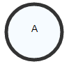
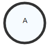

A* search algorithm
How does it work?
RULE
You have to select the node adjacent to one of open nodes that has the least total weight.
EXPLANATION
open node
any node that you have already selected plus start node
total weight
cummulative weight of connections from node to start plus heuristic prediction of distance from node to finish that is in the table
Still confused?
Read more about it and then return here to try out what you learned.
IMPORTANT: heuristic must be optimistic and consistent
If you are not sure, use path max correction.
 Start node
 End node
Start node
 End node